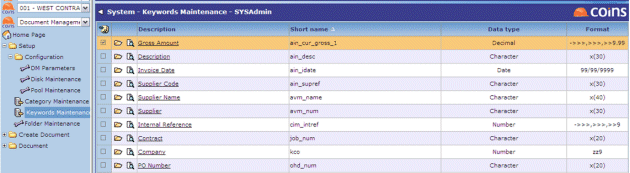
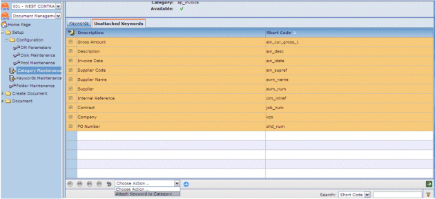
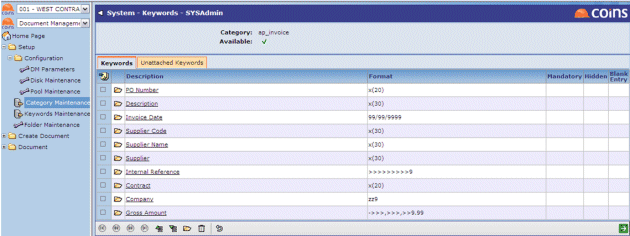
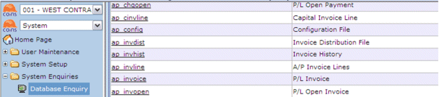
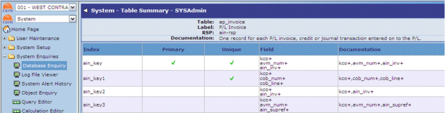
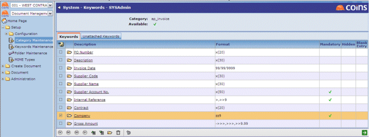

Keywords are used to describe and search for stored (attached) documents. If the documents are attached to records, some of the keywords correspond to fields on the record.
To set up keywords and associate them with document categories:
- Use Keywords Maintenance to set up all the keywords, regardless of category (document type).

- For keywords that correspond to fields, enter the field name as the Short name.
- Save the keyword record.
- If you want users to be able to select the value of the keyword from a list, click the link in the Description column and enter the possible values on the Valid Values tab.
- Use Category Maintenance to attach appropriate keywords to the relevant category (document type).


Mandatory Keywords
When manually attaching a document, one or more keywords will be mandatory. These are the keywords that correspond to the fields in the Primary Unique Index that uniquely identify a record in the database.
- Go to Database and look for the relevant table.

The mandatory keyword fields are those on the Primary & Unique index.

- To make keywords mandatory, go to Category Maintenance, select the appropriate Category (document type) and edit the relevant keywords to set as mandatory.
